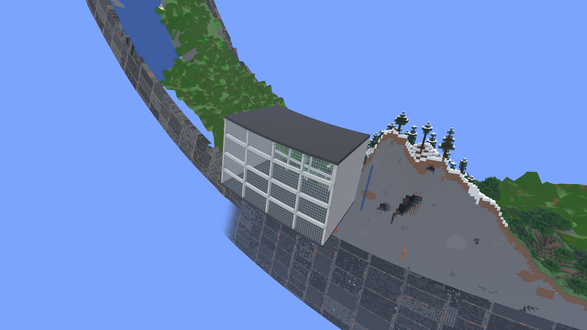
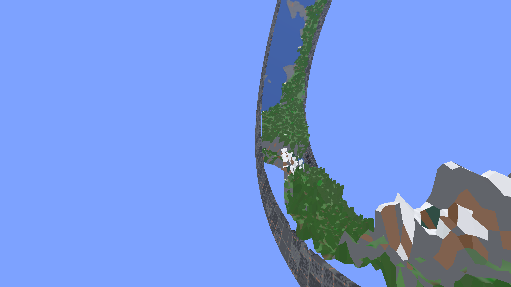
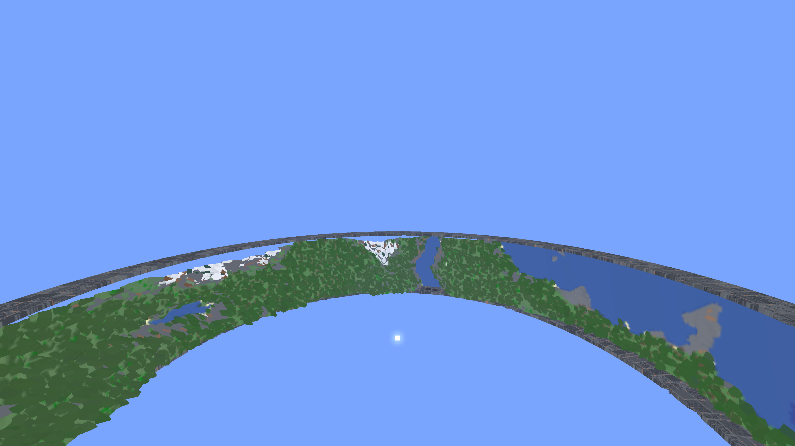

Floating exterior structure
A 64 × 32 × 32 glass-and-metal building, separated from the positive side of a 2,048 × 128 ring by a 12-block gap. Normal wall height: 160 blocks from world bottom, top at Y=96. Native game captures, hidden UI, clear midday weather. Minecraft 26.1.2 / Fabric, development branch for #255.
The Atlas was fully generated before capture. Its coverage remains the finite ring band: this exterior building appears in nearby real chunks and is absent at Atlas distance. Exterior structures currently need a separate distant representation if they are to remain visible.

Nearby — real blocks. 10-chunk view distance.
Atlas distance — the exterior building has disappeared. 6-chunk view distance.
Opposite side of the ring — the Atlas still contains only the ring band.Disposable save: run/saves/RingWorld Floating Structure Study (1). The game saved normally and closed after capture. Fixture: ringworld.captureFloatingStructure=true. These screenshots demonstrate current coverage, not support for exterior Atlas objects.